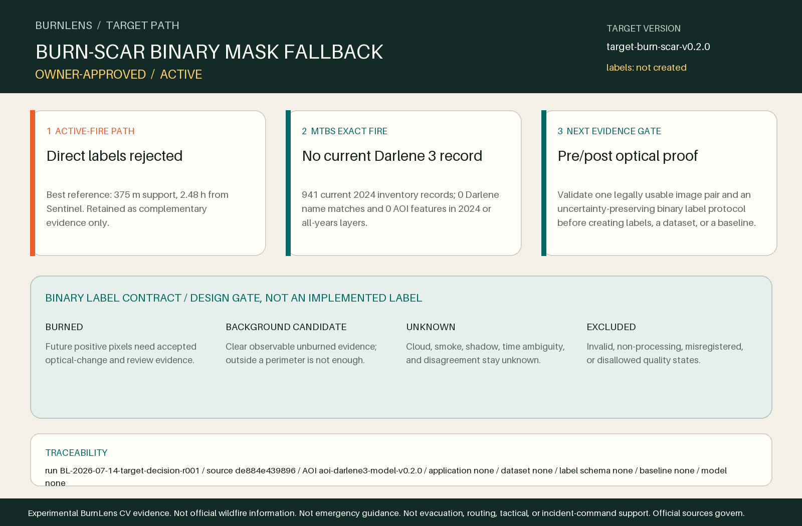

ACTIVATE_BURN_SCAR_BINARY_MASK_FALLBACK
Change the active target path from active-fire/hotspot-informed labels to the already established burn-scar binary-mask fallback. The first CV task remains binary semantic segmentation.
Target version: target-burn-scar-v0.2.0

TARGET-DECISION-2026-001; run BL-2026-07-14-target-decision-r001; source commit de884e439896b87bbdc41be9d159ff647b35726b.Why the active-fire label path stopped
The best bounded observation is useful complementary evidence, but its 375 m support and temporal offset cannot define 10-20 m pixel truth.
Thermal-anomaly evidence remains complementary reference only. Non-detection is not background, and hotspots are not resized into optical pixel truth.
MTBS: relevant, but no exact Darlene 3 product today
MTBS is scientifically relevant and publishes fire-level pre/post imagery, burn indices, boundaries, severity, and non-processing masks for mapped fires. Its current official vector services expose no Darlene 3 record in the frozen AOI, so it cannot supply the exact label for this experiment today.
The official 2024 inventory returned 941 records, with zero Darlene name matches and zero features in the frozen AOI in both the 2024 and all-years occurrence layers.
Re-query the current official inventory before any later MTBS use because releases are quarterly and revised fire products replace prior versions. Treat any future product as analyst-interpreted reference, not field truth; do not convert its six severity classes into a new multiclass target.
Binary target semantics before implementation
- Burned
- Burn-scar pixels supported by a future accepted, temporally appropriate, quality-screened optical-change and review protocol. No positive label exists yet.
- Background candidate
- Clear, observable pixels supported as unburned under the future accepted protocol; outside a perimeter or absence of a hotspot is not automatically background.
- Unknown
- Cloud, smoke, haze, shadow, snow, temporal ambiguity, source disagreement, unobserved areas, and other insufficient evidence remain unknown and are never silently converted to background.
- Excluded
- Invalid pixels, non-processing masks, failed georegistration, and quality states disallowed by the future accepted protocol are excluded.
Severity classes used: No. Multiclass expansion: No.
Next gate
Select and visually validate one legally usable, temporally defensible pre/post optical source pair over the frozen AOI, then approve a binary burn-scar labeling protocol before creating any label array.
- exact source identity, terms, provenance, acquisition dates, CRS, grid, and AOI coverage
- pre/post optical quality and interpretable burn-change signal on real rendered pixels
- burned, background-candidate, unknown, excluded, and review-needed rules
- georegistration tolerance, non-processing masks, temporal leakage controls, and independent QA
- whether a reproducible non-model spectral baseline is defensible before any model work
Permitted claims
- BurnLens rejected direct active-fire labels and activated its controlled burn-scar binary-mask fallback.
- The current official MTBS occurrence services returned no Darlene 3 feature in the frozen AOI at the recorded access time.
- MTBS remains relevant as methodology and potential future or cross-fire reference evidence.
Prohibited claims
- A burn-scar label, dataset, baseline, trained model, inference result, or analytical application exists.
- MTBS, NIFC geometry, severity classes, hotspots, or non-detections are pixel-perfect field truth.
- BurnLens is official, operational, emergency-ready, field-validated, or endorsed.
Traceability
- Repository
- drwbkr1/burnlens-deschutes
- Software / target
- 0.6.0 /
target-burn-scar-v0.2.0 - AOI
- aoi-darlene3-model-v0.2.0
- Application / dataset / label schema / baseline / model
- Not created / not created / not created / not created / not created
- Run
BL-2026-07-14-target-decision-r001- Source commit
de884e439896b87bbdc41be9d159ff647b35726b
Primary sources
- MTBS Program — mapping threshold, missing-fire reasons, quarterly revision behavior, fire-level products, scale, and interpretation limits
- Burn Severity Portal — current MTBS purpose, assessment timing, availability, audience, and data-access route
- USDA Forest Service Enterprise Map Services — current official occurrence and burned-area service layer inventory
- U.S. Geological Survey — USGS public-domain rule, exceptions for third-party materials, credit, and identifier limitations
Official sources govern over every BurnLens-derived artifact.
Experimental BurnLens CV evidence. Not official wildfire information. Not emergency guidance. Not evacuation, routing, tactical, or incident-command support. Official sources govern.